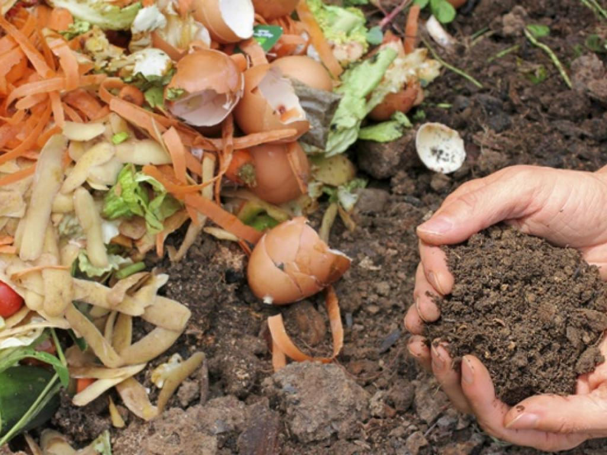

O processo da compostagem é responsável pela transformação de materiais orgânicos, como sobras de alimentos, podas de árvores e plantas, em um composto rico em nutrientes: o húmus. De fácil instalação e baixo investimento, a compostagem é uma alternativa viável para os pequenos negócios que desejam aproveitar os resíduos gerados em suas instalações.
É importante lembrar que, na compostagem o local da instalação deve ser de fácil acesso e o solo deve possuir boa drenagem. Também é desejável mantê-la em espaço sombreados e protegido de ventos intensos. Além disso, os materiais utilizados não devem conter vidros, plásticos, tintas, óleos, metais, pedras, excesso de gorduras ou ossos inteiros (apenas moídos). A carne deve ser evitada, uma vez que atraem insetos, e o papel pode ser utilizado em até 10% do total de materiais.